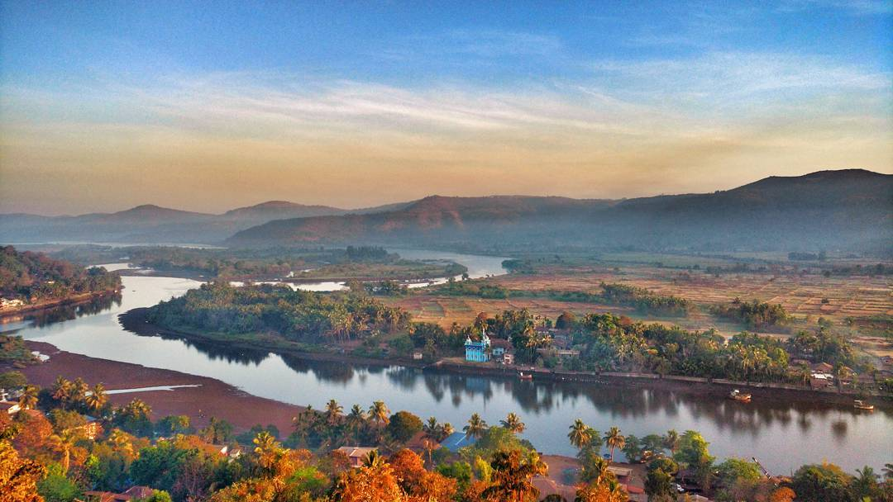

Jackfruit-Phanas
In Ratnagiri there are two types of jackfruits, Kapa and Baraka. you can also try Phanas poli and fried gare.
" District of GAZALI ! "
Sindhudurg is an administrative district in the state of Maharashtra in India, which was carved out of the erstwhile Ratnagiri District. The district headquarters are located at Oros. The district occupies an area of 5,207 km2 and has a population of 849,651 of which 12.59% were urban (as of 2011). As of 2011 it is the least populous district of Maharashtra (out of 36)... The word 'Konkan' is of Indian origin and of considerable antiquity, though the origin of the name has never been sufficiently explained. The seven kingdoms of the Konkan of mythology are mentioned in the History of Kashmir and are said to have included nearly the whole west coast of India. The Pandavas are said to have passed through this region in the 13th year of their exile and had settled in this area for some time. The Raja of this region Veerat Ray had accompanied them in the famous war at Kurukshetra with the Kauravas. In the second century A.D. the Maurya empire annexed the Konkan coast. In the middle of the sixth century, kings of the Maurya and Nala dynasties appear to have been ruling in the Konkan. The district of Ratnagiri was under the Silahars and the capital of their kingdom was probably Goa and later it may have been transferred to a more central place in the vicinity of Ratnagiri or Kharepatan. Chandrapur was one of the most ancient towns in Konkan, probably founded by Chandraditya, son of the Chalukya king Pulakeshin II. The 16th century saw the advent and rise of Portuguese power on the west coast of India and Sindhudurg was no exception. The sultan lost hold on the district in 1675 with the rise of Shivaji leading finally into the hands of Marathas. Marathas continued to the district till 1817 i.e. when the struggle between the British and the Peshvas came to an end and the whole of Konkan was transferred to the British.


Sindhudurg Fort is a historical fort that occupies an island in the Arabian Sea, just off the coast of Maharashtra in Western India. The fort was built by Shivaji. The fortress lies on the shore of Malvan town of Sindhudurg District in the Konkan region of Maharashtra, 450 kilometres (280 mi) south of Mumbai. It is a protected monument.
Sindhudurg island-fort was built by Shivaji, the 17th-century ruler of Maratha Empire. Its main objective was to counter the rising influence of foreign (English, Dutch, French and Portuguese) merchants and to curb the rise of Siddis of Janjira. Construction was supervised by Hiroji Indulkar in 1664. The fort was built on a small island known as the Khurte island.
Shivaji brought 200 Vaddera people for building this fort. Over 4,000 pounds of lead were used in the casting and foundation stones were firmly laid down. Construction started on 25 November 1664. Built over a period of three years (1664-1667), the sea fort is spread over 48 acres, with a two-mile (3 km) long rampart, and walls that are 30 feet (9.1 m) high and 12 feet (3.7 m) thick. The massive walls were designed to serve as a deterrent to approaching enemies and to the waves and tides of the Arabian Sea. The main entrance is concealed in such a way that no one can pinpoint it from outside. At a time when traveling by sea was banned by scriptures, this construction on an island represents the revolutionary mindset of its engineer. A remain of an iron mould can be seen.
Devbagh Beach Maharashtra Hop, jump and skip away from Malva's iconic Tarkali Beach, Devbagh Beach is beautiful, and hardly explored. Besides, it's just the perfect place to bask in sun or enjoy a close encounter with the wave rushing to hit the white sands. The beach marks the confluence of the Karli river, which is locally Devbaug Sangam.
Devbagh Beach is located in the Sindhudurg district of the Maharashtra state, and it is situated 13 km away from the main city Malvan. Devbagh is counted as one of the beautiful beaches across India located near Tarkarli beach. Devbagh Beach even known by the name the Golden Sand Beach.


Shri Dev Rameshwar Temple is located in village Rameshwar Wadi in Devgad taluka of Sindhudurg District, Maharashtra, India. This temple is dedicated to the Hindu deity Shiva. It is a historic temple built in 16th century. Its chief interest is the approach about 250 yards long, cut through rock fifty feet deep. The idol, a four-armed figure seated on a bull, is of solid silver said to weigh a hundred kilograms and is in good condition at present.
The architectural patterns of the temple building shows that it has been expanded at least three times from its establishment until now. In the early 18th century, Sarkhel Kanhoji Angre built a quadrangular inner shrine made up of finely hewn stones, also called as the Gabhara around the original place of Shiva's pindi. This is the main room of the temple which contains a shivling or pindi at its centre. Later, in the mid-18th century, Sardar Sambhaji Angre and Sankhoji Angre built a Mandap in front of the gabhara. This mandap consisted of four huge wooden pillars bearing beautiful carvings all over them. They also built a Pradakshina Marg around the gabhara. The entire area was enclosed with walls to form a small temple consisting of the gabhara, the mandap and pradakshina Marg. The entire temple building covers an area of 4,025 sq ft. Stone tiles were placed in the area outside the main temple building covering an area of about 15,000 sq ft. It was in this era that the temple was provided with two new gates on the western and southern side.
A fair is held for six days in the month of Magha every year which is attended by about 5,000 people from nearby villages and towns. The fair starts 5 days before the day of worship. On the Mahashivratri day, devotees observe fast and stay awake all night. Mahashivratri marks the night when Shiva performed the 'Tandava'. It is also believed that on this day Shiva was married to Parvati Ma. On this day Shiva devotees observe fast and offer fruits, flowers and Bael leaves on Shiva Linga.

Vengurla is an alluring beach town, located on the Konkan coast in the southern most district of Sindhudurg in Maharashtra. Just 110 km north of Goa, Vengurla is popular for its long stretch of clear white sand beaches ringed by high mountains. One of the busiest ports during the reign of Maratha King Chhatrapati Shivaji, the port was a busy trade center between the 16th and 18th century. The existence of huge warehouses, trading centers and markets are pointers to its rich mercantile past. Between 1664 and 1812, the town was twice burned to ground. The residue of the attacks is still seen on the Vengurla rocks, and is now popularly known as Burnt Island. The Burnt Island is group of three large rocks that were once an important navigation point for seafarers. At present, the rocks act as a breeding site for a rare bird, the Indian Swiftlet.
Vengurla boasts of five stunning beaches. Nivati beach, Shiroda beach, Mochemad beach, Sagareshwar beach, and Vayangani beach. Of these, Nivati and Shiroda beaches are highly recommended as they are blessed with crystal clear water and offer great opportunities for water sports. Vengurla is also famous for its temples like the Mauli Devi Temple, Sateri Devi Temple and Shri Vithoda Temple. Though not a shopping destination, roasted cashew nuts and sweets made from cashew are worth trying and are found in shops all around the town.
The only marine sanctuary in the state, Malvan Marine Sanctuary was established in 1987 to preserve this biologically rich coastal region. The core zone of the sanctuary expands over an area of 27 square kilometres and offers an unexploited environment for marine flora and fauna including coral, Pearl oysters, seaweed, molluscs and over 30 species of fish.__
The Malvan Marine Sanctuary is extremely rich in coral and marine life. The marine flora and fauna here pertain to sea anemones, mollusks, polychaetes, pearl oyster, corals, seaweed and mangroves. Sprawled over an area of 29.22 square kilometers, the Malvan Marine Sanctuary, Sindhudurg, Maharashtra can be visited any time in the year.


Vijaydurg (sometimes written as Viziadurg), the oldest fort on the Sindhudurg coast, was constructed during the regime of Raja Bhoja II of the Shilahar dynasty (construction period 1193-1205) and restructured by Shivaji.
Earlier, the fort encompassed an area of 5 acres (1 acre = 4840 square yards or 4047 square metres) and was surrounded by sea on all four sides. Over the years the eastern trench was reclaimed and a road constructed thereon. Presently the area of fort is about 17 acres and is surrounded by the Arabian Sea on three sides. Shivaji extended the area of the fort by constructing three walls on the eastern side, each 36 metres high. He also constructed 20 bastions.
According to legend, this is one of only two Maratha forts where Shivaji personally hoisted the saffron flag. The other fort is Torna.
Vijaydurg Fort was called the "Eastern Gibraltar", as it was virtually impregnable.[4] Its locational advantages include the 40 km long Waghotan/Kharepatan creek. Large vessels cannot enter the shallow water of this creek. Also, Maratha warships could be anchored in this creek and yet remain invisible from the sea. It is a protected monument.
After the death of Kanhoji Angre, there were two short reigns by Sarfoji and Sambhaji. The two brothers Manaji and Tulaji started fighting for the Angre throne. Nanasaheb Peshwe had intervened in the disputes between Manaji and Tulaji. This created two spheres of influence, Manaji in the north at Kulaba and Tulaji in the south at Vijaydurg. Tulaji Angre was favored by Shahu and was appointed as Sarkhel (Admiral) of the Maratha Navy. This was against the will of Nanasaheb Peshwa.
Sawantwadi Palace at Sawantwadi. The Royal Palace of Sawantwadi is one of the major tourist attractions of the Sindhudurg District. Built by Khem Sawant Bhonsle, the ruler of this region during 1755-1803. It is located in Middle of Sawantwadi city.

Fort Tiracol, is a Portuguese era fort near the village of Tiracol, in the Pernem sub-division of Goa. Located on the northern tip of Goa at the northern mouth of the Tiracol River. Fort Tiracol can be reached by a ferry from Querim, 42 km North of Panjim.
The Terekhol Fort was won by the Portuguese in 1746 and it became an important part of Portuguese maritime defences. The Fort was rebuilt in 1764 by the Portuguese viceroy Dom Pedro Miguel de Almeida. The Fort site chosen was a hillock on the right bank of the river, which gave a commanding view of the Arabian Sea.


In Ratnagiri there are two types of jackfruits, Kapa and Baraka. you can also try Phanas poli and fried gare.

Amba Poli is a traditional Mango Sweet from Konkan. It is made with Alphonso Mango Pulp and sugar. Amba Wadi. Amba Vadi is made from Alphonso mango Mawa

These are the special type of wade, that can eat with mutton and chicken. Ratnagiri is famous for it.
Best sweet dish that you will get to eat in Malvan.

Bangada-Fry is the best seafood that you will get to eat in Ratnagiri. Taste of this sea food is amazing.
Alphanso mangoes are famous in Ratnagiri. Alphanso in devagad are exported in foreign countries.


Address: Jain & Jain Construction Co 1754-K, Athawada Bazar 80ft Highway, Ratnagiri, 415612.
Timing: 9am to 8pm.

Address: 24, 25, 26, parasmani K C Jain nagar, Kolhapur - Ratnagiri Rd, Maruti Mandir, Ratnagiri.
Timing: 10am to 9pm.

Address: डाॅ. बा, ना. सावंत मार्ग, Tilak Ali, Ratnagiri, Maharashtra 415612.
Timing: 9am to 9pm.

Address: Abhyudhya Nagar, Ratnagiri, Maharashtra 415612.
Timing: 8am to 10pm.

Address: Police Head Quarters, Ratnagiri, Maharashtra 415612.
Timing: 9am to 9pm.

Address: Ratnagiri, Maharashtra 415639.
Timing: 10am to 8.30pm.

Satara is a city located in the Satara District of Maharashtra state of India, near the confluence of the river Krishna and its tributary, the Venna. The city is known as a Soldier's city as well as Pensioner's city. Famous for its Kandi Pedhe, tasty sweet item !
Kolhapur, is a Historic and ancient holy city in Maharashtra, India. Situated on the banks of river Panchganga. Prior to Indian independence, Kolhapur was a 19 gun salute princely state ruled by the Bhosale Chhatrapati of the Maratha Empire.
Ratnagiri District is a district in the state of Maharashtra, India. The district is 11.33% urban. The district is bounded by the Arabian Sea to the west, Sindhudurg district to the south, Raigad district to the north and Satara, Sangli and Kolhapur districts to the east.